Contents
What is Value at Risk?
- Existing customer
- User
- Player
- Subscriber
- Any kind of return client
- Cancellation of a subscription
- Non-renewal of a contract or service agreement
- ending a membership
- customer decision to shop at another store/use another service provider
-
Acquiring Customers Is Expensive, But Retention Can Lead Up To 95% Increase In Profits
-
Focusing On High Value Customers Can Have Significant Positive Impact On Profits
-
Customer Loyalty Is Key To Generating More Value With Time
-
Churn Is Identified Based On Various Benchmarks Of Customer Disengagement
- Customer not re-purchasing your products (within a stipulated time interval)
- Customer unsubscribing from the service
- Customer uninstalling an app
- low customer engagement
- lower customer usage activity
- Increasing customer complaints
- Low customer rating
- customer satisfaction
-
How Churn Rate Calculation Can Mislead Your Retention Strategy
- Let’s say, you started with 10,000 customers at the start of April and lost 500 of them (5 % of 10,000), gained 5000 new customers in April but lost 125 of those new customers. Customers at the start of May is (10000-500) + (5000-125) = 14375.
- Now in May let’s say you lost same rate of customers similar to April i.e.., 5% of 14375 = 719, gained 5000 new customers and lost 125 of them.
-
Churn Calculation That Is Normalized For Company’s Growth & Size Is The Right Approach
Value at Risk, in simplest term, is a statistic used to know how much loss our portfolio, company, positions will experience over a specific period of time. It can be denoted as VaR (Don't confuse it with VAR as capitalized A will mean variance). Now let's take an example:
1% one-year VaR $100 million means that there is a 1% chance that our portfolio will lose $100 million in one year. As you noticed while writing VaR we write it like this: (% Chance)(Time period)(Amount that our potfolio might lose).
Customer churn is when an:
This could, for example, mean:
Fig 1. Churn Analyses will gauge the satisfaction level of customers (Source)
All
companies, irrespective of size or growth, are affected by customers
defecting and the following financial consequences.
Hence, it is very
important
to understand what had caused your previously loyal customers to churn away
and
then translate these learnings into business mechanisms to prevent
churn.
Churn rate is one of the important metrics in evaluating business growth and
performance.
Business studies:
Businesses spend lots of money in acquiring new
customers
and studies
show that Cost of Customer Acquisition (COCA) has increased over 60%
in
the last
5 years and continuing to rise at a higher rate.
Customer churn prevention:
Spending tons of
money
to
acquire new customers and then to have the same customers churn away after 3
months is no good for any business.
Therefore, Customer Churn Prevention has become a major part of the Customer Relationship Management (CRM) for a business.
Harvard business review (Gallo): As the cost to acquire a new customer is anywhere from 5 to 25 times more expensive than retaining an existing one, according to a Harvard Business Review (Gallo).Harvard Studies: Studies by Harvard Business School also show that improving customer retention rates by 5% increases profits by 25% to 95%.

Fig 2. Customer Churn will have compounded exponential effect on Revenue Loss (Source)
Customer
studies:
In the recent years there has been a steady drop in customer
trust
among consumers, 81% of customers trust the advice of friends and family
over
that of a business.
Also new customers acquired via such
referrals of friends or
family spend 200% more and have a 16% higher Lifetime Value than
other
customers.
So, taking good care existing customers can reap more
valuable
customers in future.
Existing customers are considered as the most valuable asset for a business, and therefore, firms and industries emphasize on keeping the existing customers satisfied, by employing practices. Thus, retaining the existing customers is just as important as attracting and acquiring the new customers.
Marketing Metrics:The success rate of selling to an existing customer is 60-70%, while the success rate of selling to a new customer is only 5-20%!.
The following blog post describes top 25 interesting statistics and facts about customer churn.
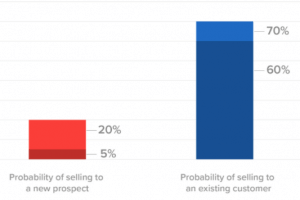
Fig 3. Existing customers are more valuable than newly acquired (Source)
Identifying churn and what is causing churn is important to take necessary
preventive measure against churn.The way churn is defined can vary across
businesses depending upon the type of business and revenue
model.
Churn could be
a:
Every business needs to create a set-off benchmarks based on which you can
identify the customers who are at risk of churn.
Some other ways
to
identify
customer churn are by actively collecting customer feedback and reviews
to
look
for any possible customer dissatisfaction, checking with customer
service
&
support teams to understand any requirements of customers that the
company is
unable to meet.
Basic Churn Rate for a time period calculated using the following formula:
The above calculation though tends to give the initial figures to understand churn, it may not be the right calculation when we may have to keep track of churn rate for certain number of periods.
Consider you are calculating churn for the month of April and May:Based on above formula Churn Rate in April is 6.25%.
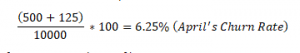
Churn rate for month of May comes to be 5.87%
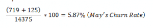
Though the churn is similar in both months as setup above, we see the churn rate dropped in May, this has nothing to do with improving churn performance or retention rate, rather a misreporting of the problem by the above formula.
Apart from that, if the month of April didn’t gain as many customers but only
100, 2 of which churned and May remained same as above, then April would have
Churn Rate of 5.02% and May would have Churn Rate of 6.3%.
This is
because the
above calculation is highly influenced by number of new customers that joined
during the period.
It is important to have a churn
calculation that better
explains churn behavior that is normalized for growth and size of the
company.
This calculation will also tend to show wrong churn rates when
calculated for
different time ranges (Monthly, Quarterly, Annual, etc.,), and no. of. days in
the month, like Feb 28 days and May 31 days are also likely to affect the churn
rate calculation.
In order to tackle above problems in churn calculation Stephen Noble of Shopify came up with the following churn calculation based on probability,
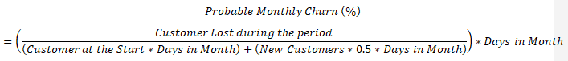
Using the above formula, we get same 0.05% of Probable Monthly
Churn for both months April and May which have similar churn as described by
data above.
By multiplying Probable Monthly Churn with current customer count we
get the estimate count of customers who are likely to churn in next 30 days.
This calculation will help you keep track of actual changes, customer
behavior
and improvement or decline in churn rate.
Customer churn is a common problem across industries
Several studies have been conducted to find the churn rate in various industries.
One such study is presented in (Shewan) that shows average
customer churn rates in a few common industries in the United States and
Europe.
Loss due to customer churn:Companies lose more than 1.6
Trillion
USD per year due to customer churn. Among various sectors
studied, the
author presented that the highest churn rates are seen in subscriptions of daily
newspapers in the US with 60%.
Banking
and Telcos sector: Witness around 20-25% and 20-38% churn
respectively.
Software-as-a-Service
(SaaS) companies reported churn rates of 5-7%.
2018
Fundraising Effectiveness Survey Report: Another sector that has
quite
high churn is the not-for-profit organizations. In not-for-profit
organizations it is 45.5% in 2018 where Donor
retention is the key towards ensuring the future financial stability.
It
has
been observed that most mid-value, high-value and bequest giving comes from
long-term, single-gift donors.

Fig 4. Average Churn Rates Across Various Other Industries (Source)
Predicting churn using datascience & Machine Learning
Customer retention is considered as one of the major challenges in modern
business. Companies employ a vast range of practices to achieve it, varying from
AI based solutions that can predict which customers are more likely to churn.
Thus retention efforts can be prioritized to focus on the most at
risk
customers.
Churn modelling has been performed using two broad
approaches:
- machine learning techniques
- survival analysis
Machine learning methods:Specifically classification, have widely been popular for predictive analytics due to their high performance and ability to handle complex relationships in data.
On the other hand, survival analysis can provide valuable insights into questions such as which customers will churn in a particular time period.
In this article, we are majorly focused on machine learning based approaches, however you can find a research paper on survival analyses approach towards the end of the article.
-
Data Quality Is Very Important & Any Data Irregularities Can Topple Entire Analysis
- Define a churn metric: Whether it is a binary classification problem or there is something more to it? The definition can vary depending on business requirements and problem context. Once the churn metric is defined
- Clean the data:It may involve dealing with missing data, Identifying & dealing with outliers in the, removing the inconsistencies between features e.g., deceased date is populated, but deceased status is false. (Resources to learn more about data cleaning)
-
EDA & Feature Engineering Are Key To A Better Performing Machine Learning Model
- Last week
- Last week to month
- Last month to last 3 months etc.
- Collection of data (that may come from multiple sources)
- Pre-processing steps that involve data cleaning.
- Feature generation via feature engineering and feature selection where significant features are retrieved
- Actual training process where a machine learning algorithm can be employed
- Model is evaluated through metrics such as Precision, Accuracy, F1-score etc.
-
Commonly Faced Challenges During Churn Analysis
In order to perform churn analysis using predictive modelling techniques:
Exploratory Data Analysis (EDA):Exploratory
Data Analysis (EDA), where we visually explore the cleaned data
to
identify all interesting data patterns or correlations of various
features with
the churn customers.
This will give us a brief understanding on what
features in
the data are better capable of explaining churn and what features are not.
With
the inputs from EDA we proceed to feature
engineering, where we generate additional set of features from the
already existing features.
Exploratory Data
Analysis (EDA): Features generated in the Feature
engineering
stage
are supposed to magnify the data patterns leading to churn. This in turn
helps
the machine learning model to be able to easily learn these data
patterns
and
then predict the customers who are at risk of churn more accurately.
(Resources
to learn about feature engineering)
For example: Customer behavior with time is a good
indicator of weather the
customer will churn in future or not. So looking at customer activity during
entire customer tenure as a feature may not help model so much.
If we create
separate features for customer activity in various time periods
like:
Figure 2 Description: It describes all major steps
involved in predictive analytics using
machine
learning.
It starts with:
And also a blog post by KDnuggets ‘Customer Churn Prediction using Machine Learning’, detailing about the process of churn prediction.

Fig 5. A Machine Learning based Predictive Analytics
- Data Quality:
Data Quality issues can lead your analysis to very strange outcomes.
Some of commonly known data quality issues are:- Duplicate data
- Incomplete data
- Inconsistent data types
- Inconsistent measurement units(Lenth in feet and width in meters)
- Possibility of human error during the analysis
- Outliers:
Outliers also pay potential threat to any analysis; it is very crucial during the data cleaning stage to identify all the possible outliers and then take necessary action on the same before proceeding with analysis.Outliers in data can skew the complete analysis and its outcomes.
- Data
Imbalance:
Imbalance is another important challenge that needs to be addressed for better model performance. Data imbalance is when the classes in your target variable are unevenly distributed.
In churn prediction data, the no of customer who have churned will always be significantly less than customers who have not churned (Ex: 1 in every 10 customers may churn).
which can be used to
tackle the
data imbalance challenge.
Some of the machine learning
techniques like ensemble
modelling are inherently capable of handling data imbalance and be
able
to
perform better even without data over-sampling or
under-sampling. A by
Ghent
University to understand more about data imbalance techniques in churn
analysis.
Sometimes when you have vast customer data it requires huge computational
resources to analyze entire data.
That is when you do:
- sampling of the data to get a sample from the whole data
- perform all the analysis
- modelling on the sample data to get the insights.
During feature engineering & training the machine learning model one has to
make sure that the independent features passed on to the model training are
not
directly related to dependent feature.
For
example: Dependent
column
‘IsChurn’ :
- 1 for churn
- 0 not churn
In this case model will only predict churn only based ‘CustomerStatus’ feature alone but nothing else, which will fail to give us actual understanding of what factors are contributing to churn.
Once the model is trained and deployed to identify customers at risk of churn on real time basis, we need to maintain the trained model with latest data. So, the model won’t miss out on any new emerging customer behavioral trends from the latest data, but learn and to predict more accurately for a long time.
Here we are presenting a few approaches that have been employed to predict customer churn using machine learning and data analytics methodologies:
Churn in saas industry
-
Saas Is How Modern Businesses Function
- B2B
- B2C
-
Churn In Saas: Less Than 4% Is Ok, 4% To 7% Is Decent & Greater Than 7% Is Not Good
- 4%-7% Churn rate:
Among SaaS companies, 4%-7% churn rates is considered as decent , anything above that is a potential indicator for you to deep dive.
If you are curious to know how your business compares to other similar companies, open benchmarks by baremetrics shows average performance metrics of similar companies based on average revenue per user.
-
Important Metrics:
Churn is one of the most important metrics of a SaaS business alongside:
- Monthly Recurring Revenue (MRR)
- Annual Recurring Revenue (ARR)
-
Above 2% Churn:
If a SaaS company’s net revenue churn is above 2% each month, it indicates
a
fault
within the company that needs to be fixed. More than
two-thirds
of SaaS
companies had an annual churn rate of 5%
or more in a given year.
To get a deeper understanding of churn in SaaS Industry, go through the following blog post which summarizes the results of 6 best Surveys conducted by various individuals on churn in SaaS Industry.
-
Revenue Churn Is Equally If Not More Important Than Customer Churn In Saas
- Customer Churn
- Revenue Churn
-
Churn Calculation In Saas
-
Good Churn Plateaus With Time, But Bad Churn Will Continually Lose Your Customers
-
Three Stages Of Saas Churn And How To Improve Churn In Each Stage
-
Short-term Churn: Targeting Right Customers Is The Key To Reduce Short Term Churn
-
Mid-term Churn: Keep Your Customers Engaged To Reduce Mid-term Churn
-
Long-term Churn: Product Development And Service Improvements Are Vital In This Stage
Software as a Service (SaaS) market mainly consists of consumers purchasing
cloud-based software services and solutions on a subscription or pay per use
basis.
Typically, SaaS software services can be:
SaaS offers a wide range of advantages to consumers like lower initial capital requirements, auto updates & maintenance, flexibility, and easy scalability etc., For more about SaaS find this article by Greg Elfrink. Gartner forecasts: Global public cloud end-user spending will grow by 47% to $397 billion and Software as a Service (SaaS) is expected to be the largest cloud market segment with $145 billion by the year 2022.
Certain services in SaaS are expected to be growing at higher rate than others as shown below,

Image Credit – Hubspot
On an average SaaS industry enjoys lower customer churn rates when compared
to
most of other industries, but it does not mean SaaS companies can ignore
churn.
It is always important to compare business churn rates with industry
specific
average churn rates.

Fig. Percentage of Active subscriptions by the end of 12 months (By Hubspot)
When it comes to SaaS, there are two types of churn that are important:
It can be measured in terms of lost Monthly Recurring Revenue (MRR) or Annual Recurring Revenue (ARR). Revenue churn doesn’t always imply losing customers but only means that revenue has declined.
Customer churn only considers the customers who are no longer in association with the business, whereas revenue churn will take into account factors like cancelled customers, downgraded subscriptions and any other factors that are leading to loss of revenue.
For Example, losing a customer with $100/month plan is not same as losing a customer with $1000/month plan, this difference is captured in revenue churn but not in customer churn.
There are variety of SaaS companies, and each calculates churn rates
differently,
all those different approaches are based on and slight variants of simple
concept of percentage of customers that leave your service.
It is
important for
a company to make sure that churn rates are calculated properly but at the
same
time they are not over complicating the calculation.
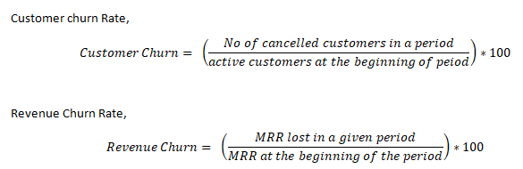
‘43 ways to calculate SaaS Churn’ by Hubspot will help you understand all the elements that are needed to calculate SaaS churn accurately by keeping it simple at the same time.
Some of the newly acquired customers of yours may leave you not
because
your
product is not up to the mark, but rather just that the product is not very
appropriate to their use case. This type of churn is known as good
churn.
If you
have good churn, you may lose customer initially, but eventually you will
stop
losing customers and the customers that stay are happy with your
product.
On the other hand, bad churn is when you keep losing customers continually. The retention continually slopes down to zero and after a certain while everyone who joined at a certain point in time is going to be churn out of your service.

SaaS churn can be categorized into three different stages and churn in each of these stages needs to be treated differently:
When customers cancel their subscription within the first one or two months.
Churn rates will be higher in this shot term period.
This is when
the
customer
will try to figure out core value your product/service has to offer, and
they
will churn out quickly if they value is not up to their expectation.
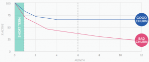
Fig. Short Term Churn
Churn in this period is very important and improving short term churn can
have
great impact on churn rates throughout the customer life cycle.
To
improve short
term churn, it is important to target the right customers and then
demonstrate
the customers all the core values of product as quickly as possible.
Churn after the first one or two months is called mid-term churn. Customers
who
have found value of your product in the short-term phase will move on to
mid-term phase.
In this phase you are looking to slow the churn rate
and
flatten
the churn rate, which tells those customers are continuing to use product.
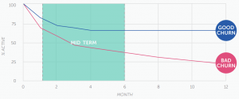
Fig. Mid Term Churn
In order to improve the mid-term churn, it is important to keep the
customers
interacting and engaged with your product/service.
You can
add
new set
of small
features to the product around same core value, refine already existing
features, improving customer service to make your product even easier to
use.
Long term churn is when the customer has successfully moved on from mid-term phase and has developed a strong relation with your product/service. Having a good long term churn rates conveys that the customers are really finding value in the product/service that is offered.
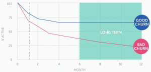
Fig. Long Term Churn
One way to improve your long-term churn is by asking your established customers
to upgrade to better plans or editions. When there is constant product
development with new capabilities and features, upgraded customers will get to
experience core value of product once again.
You can also reintroduce
your new
features to some of the inactive accounts to help them know the value of your
service better.
By making necessary improvements at every stage of SaaS churn, you are helping customers to understand the true value of your product or service, which helps in generating more Revenue Per User and possibly net negative churn.
Negative churn is when the amount of new revenue from your existing customers upgrades & cross-sells is greater than the revenue that you lose from cancellations and downgrades.
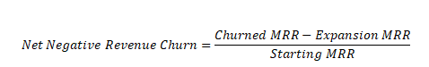
To understand more above negative churn and how to achieve the same, take a look at the following blog post ‘What is Negative Churn’ by baremetrics.
Practical tips to improve your saas churn rates
-
Companies With Higher Average Revenue Per User (ARPU) Observe Less Churn
-
Longer Contracts Reduce Churn
-
Experienced Companies Observe Significanlty Lower Churn Than Others
-
Having Transactional Difficulties Can Lead To Higher Churn
- poor network quality
- call cost
- lack of value-added services
- Support
- Customer service response time
- Traditional Predictors (such as Decision Tree, Support Vector Machine Neural Networks)
- Ensemble Based Predictors (Bagging, Boosting, Stacking etc)
- Predictors with Sampling and Feature Engineering (S&FE)
- Rule Induction Predictors (RI), Deep Learning based Predictors and Other
- Miscellaneous Approaches (Misc).
-
Telecom Churn Related Research Articles
-
Mr. Shyam V. Nath:
One of the earliest work published about Churn Prediction in Telecom was by Mr. Shyam V. Nath, where author presented Naıve Bayesian (NB) on the Teradata Duke Dataset using Customer Demographic Data, reporting an accuracy of 68%.
-
Xia and Jin [2008]
Similarly Xia and Jin [2008] performed experiments on the UCI Dataset and the Home Telecommunication Carrier dataset and achieved an accuracy of 90.9% using SVM Radial Basis Function (RBF) kernel.
-
Sharma and Kumar Panigrahi [2011]
One of the earlier work in churn prediction using Neural Networks was presented by Sharma and Kumar Panigrahi [2011] who applied a Feed Forward Back Propagation (FFBP) Neural Network on the UCI dataset, achieving an accuracy of 92.35%.
-
Mozer et al. [2000]:
One of the earliest work reported in the churn prediction in telecom industry using ensemble is Mozer et al. [2000] who explored techniques including Linear Regression, Decision Tree, NN along with Adaptive Boosting (AdaBoost) on a US telecom company dataset.
-
Mehreen
et al,
2018:
Mehreen et al, 2018 is one such example, who suggested two such models named as Boosted-Stacked learners and Bagged-Stacked learners, performed experiments publicly available UCI Churn Dataset, reporting the accuracy of 98.4%.
-
Paper:
The following paper “Customer Churn Prediction in Telecom using Machine Learning in Big Data Platform”, uses Social Network Analysis (SNA) features in the prediction model and demonstrated an increase in performance of the model from 84 to 93.3% when employed on data provided by SyriaTel telecom company.
- Decision Tree
- Random Forest
- Gradient
- Boosted Machine Tree GBM
- Extreme Gradient
- (a) shows the improvement of churn predictive model using Statistical Features related to different historical periods, panel
- (b) presents the changes in predictive model improvement using SNA Features related to the same historical periods, and panel
- (c) presents the enhancement of churn predictive model when using both statistical and SNA Features.
-
Mr. Debjyoti 2020:
Another recent work “Applying over 100 classifiers for churn prediction in telecom companies” is presented by Mr. Debjyoti 2020, who presented an exploratory data analysis report for churn in Telecom, applying a large number of attributes, i.e. 57 attributes of 51,047 customers, with 114 different classifiers, ranging from Decision Tree, SVM to various ensemble based methods.
-
Mr.Jain 2020:
In a recent study, “Telecom churn prediction and used techniques, datasets and performance measures: a review” by Mr.Jain 2020, enlisted the top reason for customer churn in telecom as follows:
- Lack of engagement
- Lack of promotion/or new offers
- Lack of customer service support
- High call rates or SMS charges
- Non-payment bills, fraud, or misuses of services by customers
- Change of location or position
-
Additional Resources: Datasets And Example Tutorials
- Churn
Prediction
Dataset:
Churn Prediction Dataset, available at the University of California (UCI) machine learning repository (henceforth mentioned as UCI Dataset).
- Teradata Duke Dataset:
Teradata Duke Dataset, a Churn dataset from Teradata Center for Customer Care relationship management at Duke University
- KDD Cup 2009
datasets:
KDD Cup 2009 datasets, the Knowledge Discovery & Data Mining (KDD) Cup 2009 datasets collected from a French telecom company Orange.
- Kaggle:
In Telco Customer Churn Dataset, The raw data contains 7043 rows (customers) and 21 columns (features). The features mostly comprises Personal and Demographic information such as Gender, SeniorCitizen, Dependants etc.
Some Billing related information such as monthly charges, total charges, payment method etc.
Example Tutorial:
Classification Analysis on Telco Customer Churn - Gradient Boosting:
EDA followed by predictive modelling using Gradient Boosting.
Example Tutorial:
Telecom Churn Prediction. - Kaggle: Telecom Churn Dataset:
(Cleaned Orange Telecom Customer Churn Dataset) The data contains 667 rows (customers) and 20 columns (features).
- Kaggle: Churn
in Telecom’s Dataset:
Around 5000 rows (customers) and 21 columns (features). The features mostly comprises call records information such as Total Call Minutes, Total Evening Minutes, Total Day Charge etc.
Example Tutorial: Customer Churn Analysis
- RStudio : IBM Watson Telecom Churn Analysis:A detailed churn analysis from scratch on IBM Watson telecom churn data, involving data cleaning, feature engineering, modelling and generating insights with access to all the code.
- Customer Demographic Data (CDD)
- Location Information such as State, Zip, apartment house, official accommodation etc.
- Personal Information such as Age, number of children, birthday, handset capabilities etc.
- Customer Service Usage Data (CSUD)
- Call Detail Records such as Call minutes, time and charges, Number of Calls to Customer Service, Number of service calls, Number of competitor service calls.
- Call Message Records such as Outgoing/incoming number of SMS, Number of Voice-Mail Messages, Message sending times, message, sending times etc.
- Customer Account Data (CAD)
- Account Length, International Plan, Voicemail Plan
- Customer Billing and Purchase Data (CBPD)
- Number of recharges, Total recharged amount, Revenue in months, Total revenue of last year, International calling fees, Count of Overdue Payment etc.
- Customer Relation Data (CRD)
- The type, duration of complaints, and the number of days the complaint lasted and if any money was refunded to the customer, estimated time it will take to resolve a complaint by the company and how many days it was delivered late, the type of fault, duration of repairs, number of appointments and number of engineer visits to the site.
- Customer who has closed the bank account.
- Customer who has not closed the account but didn’t make any sort of transactions for a specific time period.
- Customers who only use either 1 or 2 products/services offered by bank out of 10s of products/services.
-
Related Research Papers
- Oyeniyi & A. B. Adeyemo published a paper on Churn Analysis in Banking Sector which describes a early warning mechanism to identify customers who are at risk of churn using K-Means clustering technique & JRip rule based algorithm.
- Machine learning based churn prediction models requires lot of manual effort in feature engineering stage, A. B. Adeyemo also published a paper on Customer Churn Prediction using Artificial Neural Networks which eliminates the need of manual feature engineering for churn analysis.
-
Additional Resources: Datasets And Example Tutorials
-
Kaggle: Predicting Churn for Bank Customers: This data set contains details of a bank’s customers and the target variable is a binary variable reflecting the fact whether the customer left the bank (closed his account) or he continues to be a customer. The raw data contains around 10,000 rows (customers) and 14 columns (features).
Example Tutorial: Bank Customer Churn Prediction
- Logistic Regression
- SVM
- Random Forest
- XGBoost
-
Kaggle: Credit Cards Customers Data: This dataset consists of 10,000 rows (customers), 18 features. The data is imbalanced with 16.07% of customers who have churned.
Example Tutorial: Bank Churn Data Exploration And Churn Prediction
EDA (with up-sampling using SMOTE and PCA) followed by predictive modelling using Random Forest, SVM and AdaBoost. Highest reported accuracy is for Random Forest with 91%.
-
Most Important Churn Related Features In Banking Industry
We can see that companies with ARPU > $500 have a significantly less revenue churn.
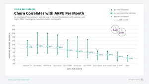
Image Credit – Profitwell
When majority of the customer base is having annual or higher term contracts, such companies observe lower churn rates.
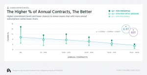
Image Credit – Profitwell
Companies which are 3 years old observe churn rate somewhere in range 4% – 24% where as companies which are 10 years old are observing churn rate between 2% – 4% range.
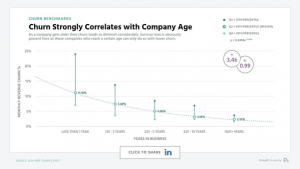
Image Credit – Profitwell
Studies show that credit card failure during the payment process has a significant impact on the churn. By fixing payment related issues companies can reduce churn by about 20%-40%.
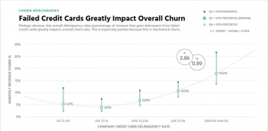
Image Credit – Profitwell
17 more ways to reduce your SaaS Customer Churn a blog post by Accelerateagency.
Churn in telecom industry
Churn in Telecom industry is when customers cancel or ends the subscription
service. Studies
show that top 4 telecom carriers in US lose about $260M USD per
month.
Telecom
Industry is one of the major sectors in which a lot of efforts have been
employed to determine the factors that can prove vital for customer
retention.
Study
performed on top Canadian telecom providers (BCE & Telus) has identified
that cost to retain the old customers is 50 times less than cost to acquire
new
customer.
Several predictive models have been developed to predict
the
dissatisfied customers who are likely to change the service provider. The
major
factors of customer dissatisfaction that sometimes result in churn, are:
A wide variety of machine learning methodologies have been applied to perform
customer churn in the Telecom industry.
These methodologies can
broadly
be
categorized into:
Ensemble
techniques have also been employed for churn prediction
in
Telecom. An ensemble model comprises multiple models that classify the
new set
of samples by taking vote on the predictions of constituent
models.
The
popular
ensemble based models, used for churn prediction in the telecom
industry,
include Bagging, Boosting and other hybrid models.
They used:

Fig. Sample Social Network Graph of Telecom Customers Interactions (each point is a customer)
In the above below, Panel:

Fig. Various Model Performance with Different sets of features
They concluded that ensemble approaches are the best performing approaches in this domain. There are not any notable works that employ deep learning techniques for Customer Churn.
A few publicly available datasets have been used as a standard
in various studies. UCI dataset is the most frequently used dataset.
It is
artificially created based on the behavior observed in the real
world.
The UCI
dataset has 20 attributes for 5,000 subscribers. The other popular
datasets
are:
There are many exam case studies, tutorials along with datasets that demonstrate how a Exploratory Data Analysis (EDA) and predictive modelling can be performed.
A few such Example Tutorials are enlisted here:
EDA followed by predictive modelling using SVM, Logistic Regression, Random Forest, AdaBoost, XGBoost
Most important features of churn analysis in telecom industry
The churn datasets in Telecom domain have different attributes (features). In
the
paper “Customer
churn prediction in telecom using machine learning in big data
platform”
by Ahmed and Afzal 2017.
They categorized the
features
used in
research related to Churn prediction into following broad categories
Churn in banking sector
Banking sector is among the top 5 industries where we observe higher customer
churn. Typically churn rate in banking would vary from 10% to
30%.
Competitors
would be main reason of customer churn in banking, customers tend to
switch
banks based on factors like better service, use of latest technology,
reliability, Interest rates, service costs, location, customer satisfaction
and
various other benefits/services provided by bank. (Ex: Discounts on card
transactions etc.,).
Studies show that identifying the customers
who
are
at risk
and reaching out to them at the right time can avoid as much as 11% of
customer
churn in banking sector.
We can define customer churn in banking sector as one of the following,
Many studies have been performed to analyze churn in the Banking sector through descriptive and predictive analytics.
The results show an accuracy of 97.53% and ROC of 0.89.
A few publicly available datasets and tutorials are briefly presented here:
EDA followed by predictive modelling using:
The most commonly used features in Bank Customer churn prediction are:
- Customer Demographic and Personal Data : Gender, Age, Location, Marital Status
- Customer Survey/Perception Data : Data quantifying how customer appreciates the services or products. Ex : Rating on services, location convenience, Customer opinion on pricing, etc.,
- Customer Account Data (CDD): Credit Score, Balance, Number of Products, Has Credit Card, Estimated Salary, Total Transaction Amount (12 months), Total Transaction Count (12 months)
- Macro-Economic and Development Indicators : Data related to current economic progress & state of affairs can also play a role on customer behavior.
Miscellaneous churn studies
-
Paper: Churn Prediction In Mobile Gaming Applications Using Survival Ensembles
- Survival analytics will focus more on predicting the approximate time frame in which the customer will churn is likely to churn, but the accuracy of the survival analytics is always questionable when compared to classical approaches.
- Classical regression and classification based churn prediction models will need good amount of churned users data for them to be able to perform better.
- This paper ‘Churn Prediction in Mobile Social Games’ talks about an approach called Survival Ensembles bringing together the best of both survival and classical methods, to give highly accurate churn prediction with little data.
-
The paper identifies the probability of customer churning as a function of time (left) and explains the main factors that are causing the churn (right) as show in the following images.
-
Employee Attrition/churn Can Cause A Loss Of 33% Of The Employee Annual Salary
-
Additional Resources: Kaggle Dataset And Churn Analysis Tutorial
-
Employee Attrition (Fictional dataset on HR Employee attrition and performance): The HR employee attrition data set, comprising 1470 employees (rows) and 35 features (columns).
Make use of the following tutorial on the above employee attrition dataset, which provides a detailed churn analysis from scratch.
The author builds & compares three machine learning models based on algorithms like:- Logistic Regression
- Decision Tree
- Random Forest
Example Tutorial: Employee Attrition Analysis using R
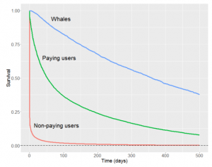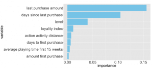
Fig. Probability of Churn with Time Fig. Feature Importance
Other than customer or client churn, Employee
attrition/Churn
has also been studied using data analytics techniques.
A study
by Employee Benefits News on employee retention found that the average
cost
of
losing an employee is a staggering 33% of their annual
salary.
Organizations
spend huge investment for training expenses, both in terms of time and
money, in
order to make an employee a productive member. Therefore, organization
incurs
substantial loss when a productive employee quits.
Several
studies have
been
reported that make use of advancement in machine learning and other
techniques
to predict employee attrition and to understand the key variables that
influence
turnover
How to prevent churn
The key to prevent churn is to Stop
customer churn before it even starts.
Once, the probability of
customer
churn is calculated using data analytics techniques, the key factors that
make
customers leave can be assessed, followed by:
- targeted loyalty campaigns
- aimed at the segment with the highest chances of attrition
- focus on valuable customers and let go jumpers
- use more flexible marketing
- sales campaigns and change products to cover customer needs
Most common pitfall for businesses around the world is that they think
if they
have great product or service to offer customer retention will happen
naturally
and they do not have to put in any additional effort to retain.
While it
maybe
true to some extent, it is only works in shorter period, and after a while
customers will start leaving you.(read more here)
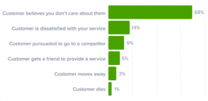
Fig. Why do customers leave a company (Source)
{kind=link}
A study summarizes the method to improve churn prevention into following list of key points
- Analyze why churn occurs
- Engage with your customers (relation marketing through emails, social listening, feedback surveys)
- Educate the customer (free trainings, webinars, video tutorials, and product demos)
- Personalize customer experience
- Know who is at risk (Find out which customers have not been contacted for a while)
- Offer incentives discounts and special offers
- Target the right audience (better to target those who appreciate the long-term value of products)
- Give outstanding customer service and support
- Pay attention to complaints (Complaints are like tips of the icebergs – they suggest that the bigger part of the problem is hidden from the view).
- Make your best people deal with cancellations
- Flaunt your competitive advantages (How different are you from your competitors? What makes you stand out? What will your customers lose if they decide to quit?
- Offer long term contracts (extending your customers’ commitment from monthly to yearly etc.,)
-
Paper: Managing Churn To Maximize Profits
- Ranking customers based on their propensity to churn
- then offering retention incentives to a subset of customers who are at the top of ranking.
- a customer’s propensity to churn
- his/her spend or value, his/her probability of responding to retention offers, as well as the cost of these offers.
- Study 1:
We can notice the profitability of suggested approach is maximum at target size of 60%. The straight dashed line is the average profitability when our target size is 100%.
Customer retention strategies typically involve two steps:
Profit from targeting a customer depends on:
And then optimally create retention strategy which leads to, on average, a 115% improvement in profit compared to other methods.

Fig. Study1: Television Campaign Fig. Study 2: Special Interest Organization Campaign
The above figure describes how in both the studies the approach proposed in the paper (Profit Loss) is achieving better profitability compared to other approaches.
A successful customer retention strategy is very important to the overall success of any business. It can save valuable resources, can reap better profits, gain customer loyalty, word of mouth marketing, higher referrals, larger repeat business transactions and much more.
Conclusion
From all this following conclusions can be made:
-
With immense digitization of businesses across the world consumers have access to several service providers. In such a competitive environment it takes a lot of effort & resources to acquire new customers.
-
Also cost to the customer for switching service provider are gradually decreasing which leads to higher churn rates.
-
An effective churn analysis mechanism to identify the customers who are at risk of churn, understanding the reasons that are causing customer churn and adopting a proactive customer retention strategies to prevent churn is very crucial to the performance of any business.
-
We can predict churn by analyzing behavioral and transactional data of customers. Mining their data, to find patterns that are specific to customers who have already churned, can help you identify those customers, who are likely to churn.
-
In order for a firm to increase the retention rate and reduce the churn rate, the firm has to focus on the customer satisfaction and making user interactions (transaction attributes), more user friendly and hassle free for its customers.
-
Churn prediction can be used within your business. It is one of the key components, which in conjunction with lifetime value of customers (CLV) can help you take marketing decisions that is customized at a customer level.
-
One can compare churn rates in different customer segments (high CLV segment and low CLV segment), and in turn we can take customized decisions to retain highly profitable customers and also not to spend more than required resources on retaining customers who are least profitable to the business.
Bibliography
-
Sources:
-
Ahmad, Abdelrahim Kasem. 2019. “Customer churn prediction in telecom using machine learning in big data platform.” Journal of Big Data 6 (1).
-
Ahmed, Mehreen, and Hammad Afzal. 2017. “A survey of evolution in predictive models and impacting factors in customer churn.” {Advances in Data Science and Adaptive Analysis 9 (3).
-
Debjyoti, Adhikary. 2020. “Applying over 100 classifiers for churn prediction in telecom companies.” Multimedia Tools and Applications.
-
Gallo, Amy. n.d. “The Value of Keeping the Right Customers.” Harvard Business Review. Accessed 3 28, 2014. https://hbr.org/2014/10/the-value-of-keeping-the-right-customers.
-
Hadden, John. 2006. “Churn prediction: Does technology matter.” International Journal of Intelligent Technology 1 (2).
-
Jain, Hemlata. 2020. “Telecom churn prediction and used techniques, datasets and performance measures: a review.” Telecommunication Systems.
-
Levis, Bill. n.d. “2018 Fundraising Effectiveness Survey Report.” Accessed 3 28, 2021.
https://afpfep.org/wp-content/uploads/2018/04/2018-Fundraising-Effectiveness-Survey-Report.pdf. -
Nath, Shyam V. 2003. “Customer churn analysis in the wireless industry: A data mining approach.” Proceedings-annual meeting of the decision sciences institute} 561.
-
Shewan, D. n.d. “How to Calculate (And Lower!) Your Customer Churn Rate.” Accessed 3 28, 2021. https://www.wordstream.com/blog/ws/2014/05/12/customer-churn.
-
Steven H. Noble, Shopify Engineering 2011. https://shopify.engineering/defining-churn-rate-no-really-this-actually-requires-an-entire-blog-post
-
Comments :
-
References:
Recent Comments